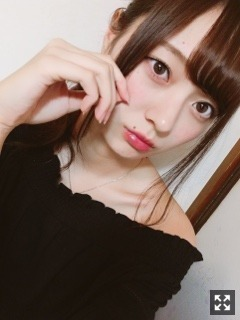
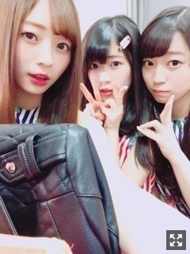
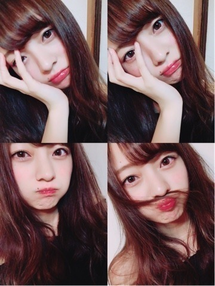

極度の暑がり。梅澤美波
みなさまこんにちは！！
乃木坂46 ３期生の
梅澤美波です！！
長いです今日も、

珍しきポニーテール
桜が咲いてるよ〜
"梅"の花も( ¨̮ )（笑）
どうして急にこんなに暖かくなってしまったの( .. )寒いの恋しいよ〜
私が大好きな寒い冬まで
またしばらく待たなければいけないようです
冬服着たいなあ
夜が好きだから暗くなるのが遅いのが本当に悲しい
最近は風が気持ち良くって
あの日の空気感と似てるな〜
あの日の風の匂いと似てるな〜
って一人で思っておる( ¨̮ )（笑）
夜桜見に行きたいな〜
綺麗な夜景が見たいなあ〜
誰か〜一緒にいこ〜( ¨̮ )（笑）
この間、樋口さんの舞台
観劇させていただきました！！
もうね、本当に素敵でした
樋口さん、いつもすごく優しくて
その優しさや人柄が
しずかちゃんにすごく出ていて
見ていてほんわかしました。
本当に可愛かったです（ ｉ _ ｉ ）
そして、犬夜叉も、一昨日観劇させていただきました！
本当に、かっこよかった、、！！（ ｉ _ ｉ ）
若月さんはめちゃくちゃ可愛いが溢れていて、すごく勉強になったし
純奈さんはかっこよすぎて初めのセリフから１人でうわああああ！！ってなってました。
ドラえもんの舞台も犬夜叉の舞台も
書ききれないくらい想いはいっぱいだけど
長くなるのでここまでにします。
純奈さんね、いつも現場が被ると
梅澤ちゃーんって来てくれるんです。
ぎゅーしてくれるんです（ ｉ _ ｉ ）
いいだろ〜（笑）
舞台終わって挨拶した時もね
ぎゅーしてくれたの、きゅんてした
先輩方の舞台ってすごく勉強になります。
得たものを取り入れていきたいなあ、と。
ちら
そして
３期生単独公演
決定しました！！！！
本当にありがたいです。
アイアシアターを場所に選んでくださったことに
愛を感じます。！
あそこの場所だから意味があるなって
帰れます！アイアシアターに！
成長している私達を見てほしい！
私にとってはリベンジでもあります。
プリンシパルの最後２日間、４公演出れなかった分、人一倍がんばりたい！
ぜひ、見に来てください。
素敵なものに出来るよう、12人で精一杯頑張ります！
あとね、
乃木恋、３期生入学しました！！
私もやっていたから不思議な気持ち( .. )
ぜひ彼氏なって〜〜！！
（笑）
あとね、私の人生を変えてくれた
３期生募集セミナーから
１年経ちました！
乃木坂に入る前の私は
人の目を気にしすぎてなにもできないような小心者だったりしたんだ〜
人前に出るなんて絶対無理〜って子だった
だけど今、
たくさんの人の前で演技したり
アンパンマンのモノマネしてみたり（笑）
歌ったり踊ったり
今はめちゃくちゃ大好きな雑誌の撮影をしたり
人見知りの私がそんなの感じさせないぐらい楽しく握手会できていたり
人って何が起こるか分からないなって
身をもって、すごく思います。
たくさんの方に出逢えた今が幸せ( ¨̮ )
チャレンジすることって
わるくない！！って今なら思える！

なんかおん眉気味（笑）（笑）
けっこう前の髪染める前
たまみとれんか〜可愛すぎる妹たち
一昨日めちゃくちゃ久々にバスに乗ったの
天気が良くて空も綺麗で
好きな歌を聴きながら乗ってたら
不意に泣きそうになった( ¨̮ )（笑）
バス好きなんだよね〜
夜もまた違った良さがあったりする
質問返し〜 ！！
Q.行ってみたい県は？
A.石川県！街並みが綺麗ってよく聞くの！和風って！落ち着く日本ならではって感じの街を歩きたいの〜。あとは京都も行きたい！今ちょうど桜の季節だし、絶対綺麗よね( .. )
Q.餃子食べたい気分！みなみんは？
A.ラーメンたべたい〜（ ｉ _ ｉ ）ずっと言ってる。多分もう２ヶ月ぐらいは食べてない気がするラーメン。恋しいラーメン( .. )ねぎしの牛タンもたべたい！！
Q.学校の制服ブレザー？セーラー？
A.中学はセーラー服で高校はブレザー！！どっちもめちゃくちゃかわいいの( .. )もうコスプレかあ〜
女の子へ☺︎
Q.オススメの美容法は？
A.色々模索中なの、乳液変えてみたり化粧水かえてみたりとか！私に合うのは乳液先行の物って見つけたりとか色々発見があるよ〜☺︎あとは美顔器使ったりスチーマー使ったりしてます！あと最近ボディスクラブにハマってるんだけど、また詳しく書くね〜( ¨̮ )
Q.ダイエット法は？
A.ダイエットはしよう！と思って全力でしたことはないかな〜好きなものは好きなだけ食べたい派！我慢するとストレスが肌にでたりするから( .. )食べすぎたら次の日少し我慢とか、調節します！間食しなかったりするだけで違うと思います！頑張ろう女の子〜( .. )
4月1日の全国握手会
ありがとうございました！
めちゃくちゃ楽しかった！！
ペアはれんか〜！！
れんか推しの方がれんかにデレデレしてるの見るのほんわかして好きだ。( ¨̮ )（笑）
人の顔覚えるのは得意だけど
名前は時間かかってごめんね（ ｉ _ ｉ ）
女の子も多くて嬉しかったの( ¨̮ )
ちっちゃい子もね来てくれたりしてね
なんであんなに癒されるんだろう
可愛すぎて連れて帰りたかったよもう( .. )
何回もループしてくれる方も多くて
本当にありがとう、無理しないでね( .. )
でもたくさんお話できるの
めちゃくちゃ嬉しいんだ〜☺︎☺︎ありがとう
タオルとかバッジとか
手作りの名札とか手作りTシャツとか
もうたくさん本当にありがとうね
元気出る！！幸せ！！
楽しかったかな〜( .. )？？
私はもうめちゃくちゃ楽しかった！
やっと会えて幸せだったよ〜
お話上手になれるように
もっと頑張るね( ¨̮ )
明日は個握です！！
ずっと待ち遠しかった〜
私らしい服着ようと思ってます
パジャマ着るか迷ってるの〜
私は個性があまりないから
自分なりのものを、自分だけのものを届けているつもりです
とか
って、握手会や雑誌のインタビューの際に
ほめていただけることがあるから
もっと頑張りたいなって思います！

ふざけてたやつ
（笑）（笑）
告知させてください！
３/２１ OVERTUREさん
３/２４ Samurai ELOさん
３/２４ B.L.T.さん
4／6 Top Yellさん
発売中です！！
4／8 UTB+さん
本日発売！
4／10 MARQUEEさん
ソロカット撮影、パーソナルインタビューを受けさせていただきました！いつもと違うモードな雰囲気。撮影もすごく楽しかったの〜☺︎
４/２２ BRODYさん
３期生で全員撮影！
４/２２ アップトゥボーイさん
初ソログラビア！見てほしい！
まだまだですが、告知が出来るのは
本当に嬉しい。
もっと頑張りたい！
大好きな撮影を、増やしたい！がんばる
あと、NOGIBINGO!8さん３期生メインで出させていただきます。
本当に嬉しいです（ ｉ _ ｉ ）
ずっと見ていた番組だったから（ ｉ _ ｉ ）
と共に不安でもあるけど
思いっきり、全力で恥じらいとか捨てて
私はバラエティに挑む！って決めたから頑張ります！
どんな姿でも嫌いにならないでね、( .. )
ちゃんと見ててね〜
12福神さんと３期生がコンビを組んで
紹介してもらう企画をやらせて頂いています！
ありがたく、とても嬉しいです（ ｉ _ ｉ ）
私の出番はまだだけど
後ろにちょこちょこいるから見つけてみてね( ¨̮ )（笑）
３期生のこと知ってもらえたら嬉しいです！
ぜひ見てね〜
今ある空気感とか
当たり前になってきているものに、
私は負けたくない
から頑張る
以上！
半身浴して寝ます〜
だいふくみなみ
（笑）
ばいばい
これもね、私なりの皆様への一つの気持ちの表し方です
伝わってるかなあ
明日天気あまり良くないみたいだから
気をつけてね、
みんな〜新生活、がんばろな、一緒に
Original：https://www.nogizaka46.com/s/n46/diary/detail/37964?ima=0530&cd=MEMBER